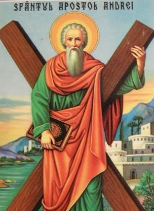
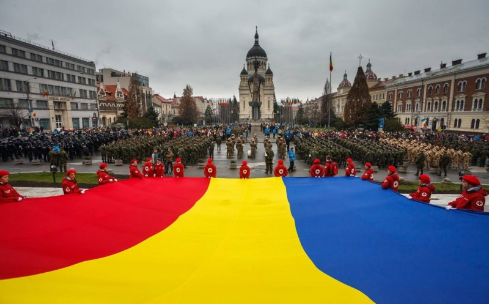
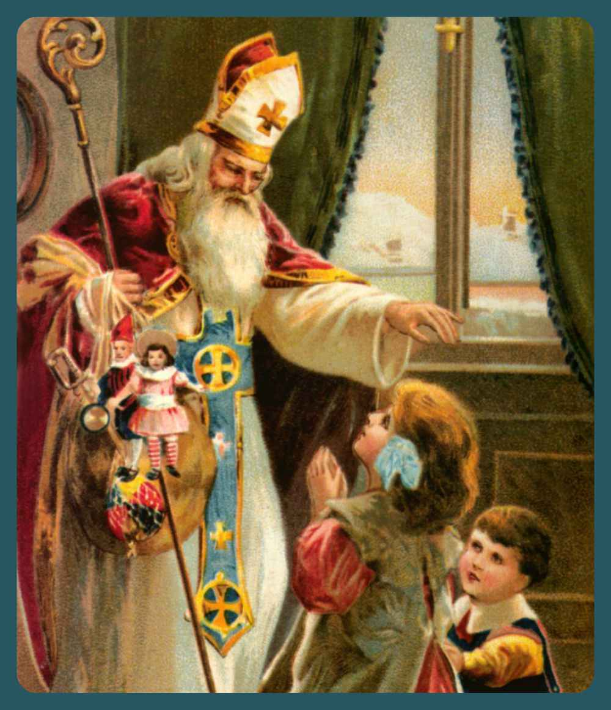

.jpg)

Sfantul Andrei 30 NOIEMBRIE
Sfântul Andrei, „cel dintâi chemat” de Iisus să-i fie ucenic și apostol era din Galileea, a fost ucenic al Sfântului Ioan Botezătorul și l-a urmat pe Hristos. Propovăduiește Evanghelia în Tracia, a încreștinat pământul românesc începând cu anul 61 (în Dobrogea de astăzi). Sfârșește răstignit pe o cruce în formă de X lângă Corid. Sărbătoarea de Sf. Andrei este o sărbătoare religioasă dar avem și unele practici tradiționale: se pune grâu la încolțit pentru a prevesti recolta anului viitor, ritualul turtei sărate pentru ca fetele de măritat să-și viseze ursitul, se freacă ușile și ferestrele cu usturoi pentru alungarea spiritelor rele. Peste o jumătate de milion de români poartă numele de Andrei/Andreea. Se spune că pe 29 Noiembrie, în noaptea de Sf. Andrei se dezlănțuie forțele malefice reprezentate de strigoi (spiritele morților) și de lupi. Se zvonește că strigoii sunt foarte periculoși pentru pământeni, deoarece iau viața rudelor apropiate, aduc boli, grindină și alte necazuri. Românii se protejează de spiritele rele prin ungerea ferestrelor, ușilor și a hornurilor cu usturoi ori chiar și pe corp.
1 DECEMBRIE ZIUA ROMANIEI1 DECEMBRIE este una din multele sărbători de iarnă pe care românii o serbează prin participarea la evenimente dedicate, parade și petreceri. Câteva lucruri interesante despre ziua de 1 Decembrie, Ziua Națională a României:
Ziua națională a României a fost între 1861-1866 ziua de 24 Ianuarie, între 1869-1947 ziua de 10 Mai, apoi, între 1948-1989, ziua de 23 August. Prin legea nr. 10 din 31 iulie 1990, promulgată de președintele Ion Iliescu și publicată în Monitorul Oficial nr. 95 din 1 august 1990, ziua de 1 decembrie a fost adoptată drept zi națională și sărbătoare publică în România. Această prevedere a fost reluată de Constituția României din 1991, articolul 12, alineatul 2. Opoziția anticomunistă din România a pledat în 1990 pentru adoptarea zilei de 16 decembrie drept sărbătoare națională, fapt consemnat în stenogramele dezbaterilor parlamentare.După unirea Transilvaniei cu România, și ziua de 1 Decembrie a devenit o zi de sărbătoare națională, fiind sărbătorită mai ales în Transilvania. Nefigurând însă printre sărbătorile naționale legalizate oficial, ziua de 1 Decembrie a căzut în uitare. În anul 1990, după revoluția anticomunistă din anul 1989, parlamentul dominat de FSN a refuzat propunerea venită din partea opoziției, de a adopta ziua de 16 decembrie drept sărbătoare națională a României. Pe fondul confruntărilor interetnice de la Târgu Mureș din martie 1990 și a mineriadei din 13-15 iunie 1990, Parlamentul României a adoptat la 31 iulie 1990 legea nr. 10 din 1990, prin care a fost abrogată Hotărârea Consiliului de Miniștri nr. 903 din 18 august 1949 privind declararea zilei de 23 August ca sărbătoare națională și a proclamat în locul ei ziua de 1 decembrie drept sărbătoare națională.Legea 10 din 1990 nu precizează semnificația sau motivul alegerii zilei de 1 decembrie drept zi națională a României.

SFANTUL NICOLAE -6 DECEMBRIE
În ziua de 6 Decembrie, românii îl sărbătoresc pe Sfântul Nicolae, cunoscut drept cel care a făcut multe daruri săracilor, i-a liniștit pe cei întristați și i-a vindecat pe cei bolnavi. Anul acesta (2022), ziua de 6 Decembrie pică într-o zi de marți. În această zi de sărbătoare, potrivit datelor furnizate de Direcția de Evidență a Populației, peste 800.000 de români își serbează onomastica. Mai mult, în noaptea dintre 5-6 Decembrie, copii îl așteaptă pe Moș Nicolae să le aducă cadouri.CRACIUNUL-25 DECEMBRIE
Ajunul Crăciunului se sărbătorește pe data de 24 Decembrie și reprezintă ziua de dinaintea Crăciunului. Anul acesta (2022), Ajunul Crăciunului pică într-o zi de sâmbătă. Ajunul Crăciunului este o sărbătoare plină de obiceiuri și tradiții populare, multe dintre ele păstrându-se încă și astăzi, cum ar fi colindatul, se împodobește bradul sau se pregătesc preparatele pentru masa în familie.